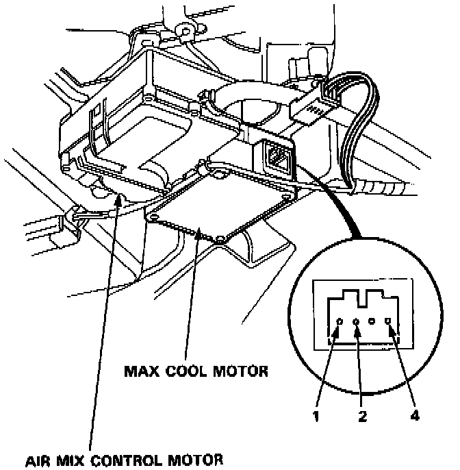

Component Test

1. Connect battery power to the No. 1 terminal of the max cool motor and connect ground to the No. 2 and No. 4 terminals; the max cool motor should run smoothly.
2. Disconnect ground from No. 2 or No. 4 terminal; the max cool motor should stop at SHUT or OPEN.
CAUTION: Never connect the battery in the opposite direction, or damage will result to the max cool motor.
NOTE: Don't cycle the max cool motor for a long time.
3. If the max cool motor does not run in step 1, remove it, and check the max cool linkage and door for smooth movement. If the max cool linkage and door move smoothly, replace the max cool motor.